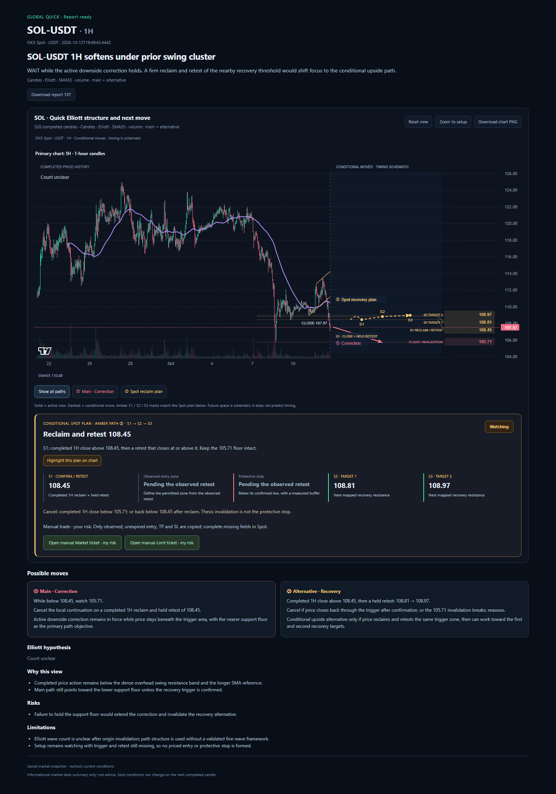

PULSE · Global Quick / Pro
Final implementation screenshots · 13 October 2026. The selected report timeframe is 1H (one-hour candles); Pro separately shows 4H context. These reports use the final Grok prompts on the original saved live market data. No checkout or regeneration happens on this review page.
Both live-data reports are Watching with Count unclear. The labelled Elliott fixture below is a synthetic illustration of the accepted design. The original purchased reports remain unchanged.
Market / Limit controls, inactive setup labels and API startup validation

Click the image to inspect the original resolution.